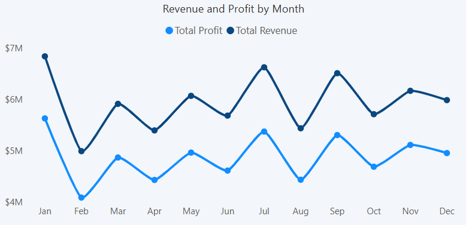
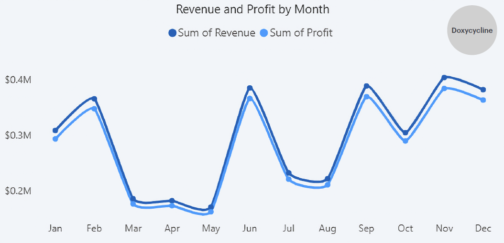
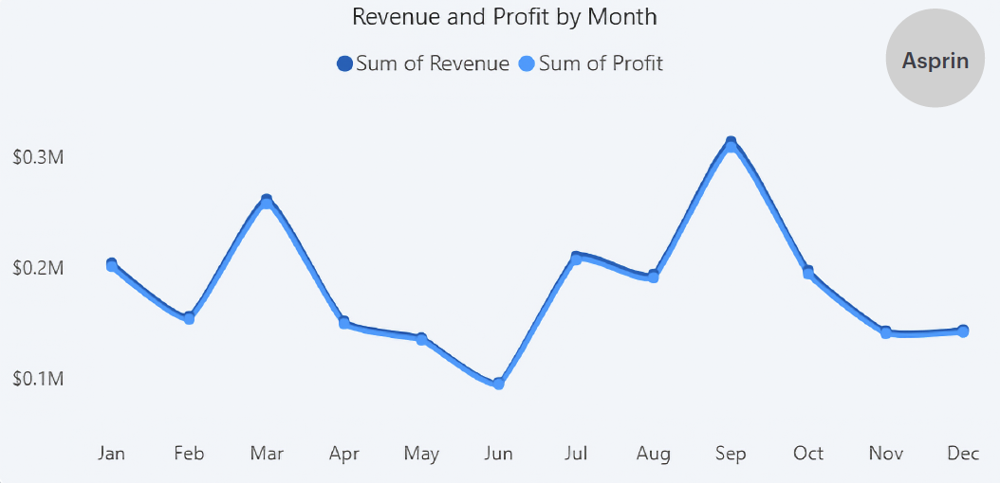

Nova Med Solutions
Advancing Global Health Through Reliable Pharmaceutical Supply

Advancing Global Health Through Reliable Pharmaceutical Supply
This project took a deep dive into Nova Med solutions a dynamic and a leading pharmaceutical company that has expanded across Europe and other part of the continents. NovaMed Solutions aims to optimise sales performance and inventory management across its diverse healthcare network. The company faces challenges in demand forecasting, stock control, and customer engagement, impacting operational efficiency. Over the past year, comprehensive sales data—including revenue, profit margins, drug performance, and customer demographics—has been collected. This dataset provides a unique opportunity for in-depth analysis and trend identification. Leveraging data-driven insights, NovaMed seeks to enhance business strategies, identify key market opportunities, and streamline operations. The project focuses on translating complex sales data into actionable decisions. Ultimately, the goal is to improve efficiency, profitability, and customer satisfaction across the organisation.
The goal is to optimise sales performance, undersstand and improve customer engagement, and uncover key business insights using data.

NovaMed Solutions is a leading pharmaceutical distributor with a strong presence across Europe and other regions worldwide. Renowned for its expertise and commitment to high-quality standards, the company ensures the availability of essential medications to diverse healthcare providers. Their supply chain includes hospitals, distributors at smaller scale, and direct users. By combining innovation with data-driven decision-making, the company helps customers optimise operations, improve patient access, and make informed strategic choices. With a focus on excellence and reliability, NovaMed empowers healthcare companies to address critical health challenges and achieve measurable impact.
The company continue to supports hospitals, distributors, and direct users with with timely access to high-quality pharmaceutical solutions.
NovaMed Solutions is currently underutilising its extensive sales and customer data, limiting its ability to gain full visibility into business performance, and effectively identify key market and customer opportunities across its global operations.
The problem has been identified and summarised into bullet points for clarity:

The project aims to uncover meaningful insights from NovaMed’s sales and customer data, enabling the organisation to improve performance, enhance customer engagement, and support strategic decision‑making.
The objectives have been clearly outlined below for clarity:
The data analysis process followed a structured and methodical approach to ensure accuracy, reliability, and meaningful insights. The key stages are outlined below:
This project delivers data-driven insights to improve revenue growth, enhance customer engagement, and improve business operations.

NovaMed Solutions’ performance over the past year reveals a business driven by fluctuating revenue and profit trends, rather than consistent growth. Monthly analysis shows clear peaks in January, July, and September, contrasted by a sharp decline in February, indicating seasonal demand patterns and potential inefficiencies in planning and forecasting. Profit closely follows revenue with a consistence gap which suggest relatively stable cost control, howvever, the absence of sustained upward momentum highlights limited long-term growth stability.
.png)
A deeper analysis shows that NovaMed’s financial performance is anchored by the strong contribution of its top‑earning drugs, with Doxycycline, Ergocalciferol, and Lisinopril forming a stable revenue core, each of these products generated equally strong revenue, demonstrating consistent market demand and a well‑balanced product mix at the top of the portfolio. However, Clonazepam and Ezetimibe follow closely behind, reinforcing the depth of commercial strength and highlights ability to sustain meaningful revenue across multiple products (medications).
This distribution of revenue suggests a healthy competion among the top 5 products, where no single product dominates excessively, and the top performers provide a reliable financial backbone.

Percentage contribution of the top 5 products (drugs) to revenue. Indicating well balanced product mix and consistent demand among the top 5 products

Hydrochlorothiazide, Fluticasone, Amoxicillin, Montelukast, and Warfarin represent the lower‑performing end of NovaMed’s portfolio, generating substantially less revenue compared to the leading products. Their low revenue performance signals areas such as; shifting market dynamics, intensified competition of other products, or reduced therapeutic demand may be constraining their commercial outcomes.
While the top‑earning medications drive NovaMed’s financial strength, the quantity‑sold analysis reveals a more nuanced picture of market behaviour.

Doxycycline performs best among the top 5 drugs contributing to revenue, but ranked second in units sold and has a sales margin ~ 36% below Lisinopril. This suggests a price and cost review is needed for Lisinopril to generate optimal revenue. Furthermore, Hydrochlorothiazide, Montelukast, and Amoxicillin - records higher sales volumes than the top performing drugs except Lisinopril indicating they are more demanded but are priced lower, limiting their revenue contribution despite strong unit demand.

From a profitability standpoint, the analysis reveals a clear stratification across NovaMed’s portfolio. Aspirin and Omeprazole emerge as the most efficient performers, achieving profit margins of 0.98, indicating exceptional cost‑to‑revenue conversion and process efficiency. Escitalopram follows closely, while Doxycycline the top selling product show comparatively lower efficiency at 0.95. This may signal potential margin compression or higher cost structures.

A deeper dive into the Doxycycline reveales that there is a noticeable consistent gap between revenue and profit trend indicating product cost not fully efficient. However, there are sales spikes in early year, mid-year and end of the year indicating time of high demand and high market sales. The alignment between the peaks and dips of revenue and profit indicates strong correlation between market demand and profitability.

Aspirin, by contrast, demonstrates a more stable and tightly aligned trend profile. Revenue and profit lines track each other consistently with minimal divergence, reflecting predictable demand patterns and a steady profit‑to‑revenue ratio. This indicate optimum performance (stable profit margin, and stable cost) of the product over the years.

The customer demographics shows male contributed to the Revenue more than other genders over the years, and there is variability with dips and peaks, with peak of $ 3.3M in May. This indicate a strong and stable demand segment. Female and Other Category contributions follow a similar trajectory but with slightly lower amplitude, suggesting comparable engagement levels with moderate variability.

Further Analysis shows that the Preferred Cuatomer Segment (Hospitals and Retailers) contribute 36% of the total revenue with a margin of 2% above the new customer (34%) while the frequent buyer contributes less with 30%. This highlights the effectiveness of acquisition channels, marketing strategy and first‑time buyer conversion.
However, majority of the buyers across each customer segment was dominated by the male gender with the Other gender category showing srong dip in revenue across frequent buyers.

The buyer type - revenue analysis indicate that most of the Novameds customers are reseller contributing 88% to the total revenue and with a margin of 76% over the direct-users category. This indicates that NovaMed's customer-base is strongly dependent on resellers and all efforts should be taken to preserve this category.

However, the age demographics shows a a strong competion among all the age distribtuion with minimal margin across all age groups, demonstrating broad market penetration and diversified demographic reach.

The geographic demogrpahics shows that more revenue is generated from Canada with ($32M) and lowest revenue generated from United States with ($6M). Australia with ($15M) also shows strong revenue contribution but its about 50% lesser than the Canada. Other locations contribute lower percentage of 9 to 8% indicating low sales in these regions. This might indicate untapped market opportunities in these regions.
.png)
A futher drilled down of the highest performing county by Customer Segment reveals that the Preferred Customers drives revenue. However, there is noticeable variability in other countries - shown in the live dashboard.